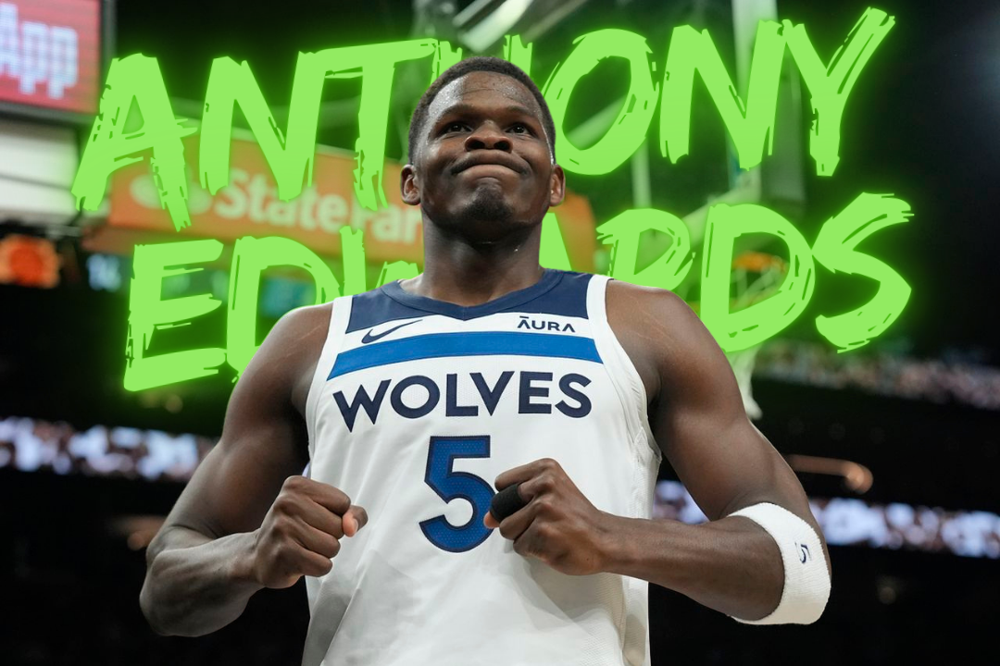
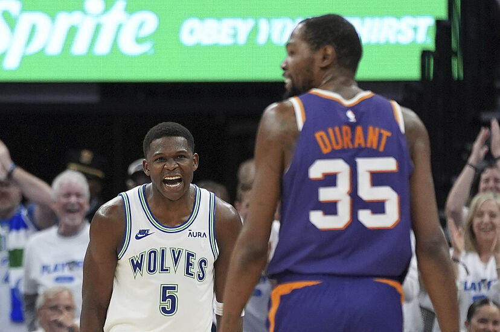

Sergapan Anthony Edwards dan Generasi Baru NBA
Ditulis oleh Fatur Rahman, pada 3 November 2024
Sudah tidak ada Stephen Curry dan Kevin Durant di playoff NBA musim ini. LeBron James hanya terpaut satu kekalahan lagi dari gugur di babak pertama. Tiga megabintang itu merupakan wajah NBA, setidaknya dalam satu dekade terakhir. Gerhana yang dialami mereka saat ini adalah penanda peralihan sebuah generasi.
Generasi baru NBA telah tiba. Itu dipertegas oleh guard 22 tahun Minnesota Timberwolves, Anthony Edwards, di markas Phoenix Suns, Stadion Footprint Center, Senin (29/4/2024). Dengan sumbangan 40 poin, 9 rebound, dan 6 asis, Edwards mengantar timnya menang di gim keempat, 122-116, dan lolos ke semifinal wilayah.
Wolves menyapu bersih Suns di babak pertama playoff, 4-0. Edwards sekaligus menyingkirkan Durant, forward Suns, yang merupakan idola masa kecilnya. Ketika Durant pertama kali masuk ke NBA, pada draf 2007, Edwards masih berusia lima tahun. Bahkan, dia belum mengenal bola basket.
Namun, pemain yang dijuluki ”Ant Man” itu sama sekali tidak segan menghadapi Durant yang sudah berusia 35 tahun. Selama empat gim, Edwards selalu bisa lebih bersinar atas pemain yang masuk NBA 75th Anniversary Team tersebut. Dia mencatatkan rerata 31 poin, 8 rebound, dan 6,3 asis versus Suns.
Aura kebintangan Edwards semakin terpancar seusai laga. Dia menyiapkan sesuatu untuk sang senior saat bertemu lagi di Olimpiade Paris 2024. Keduanya terpilih masuk tim nasional Amerika Serikat. ”Saya sangat menghormati KD (Durant). Senang bisa bermain dengannya musim panas nanti. Namun, saya akan mengejeknya, saya telah mengirim dia pulang (di playoff),” ujarnya sambil tersenyum.
"Kami melihat dia bertubuh, berevolusi
sebagai pemimpin dan seorang pria."
Sosok Edwards yang penuh percaya diri, agak angkuh, dan ambisius mengingatkan pada legenda NBA, seperti Kobe Bryant dan Michael Jordan. Omongan mereka setinggi langit, tetapi berhasil dibuktikan dengan kehebatan di lapangan. Mereka tidak takut dengan sorotan karena sangat yakin dengan kemampuan diri sendiri.
Kata orang bijak, perkataan adalah investasi masa depan. Edwards selalu percaya, dirinya akan menjadi wajah NBA sejak dipilih Wolves di urutan pertama draf 2020. Sebelum playoff dimulai, awal April, dia juga berkata dalam wawancara dengan ESPN. ”Dua tahun lagi (akan menjadi pemain terhebat di NBA),” ujarnya.
Seorang bintang baru akan diakui publik luas ketika bisa berdampak pada kemenangan tim. Edwards sempat diragukan bisa menjadi sosok seperti itu karena belum konsisten selama tiga musim pertama. Setelah dipilih dalam draf, dia bahkan mengaku tidak terlalu tertarik dengan bola basket. Namun, dia membalikkan semua prediksi tersebut pada musim ini dengan catatan bersejarah bersama Wolves.
Wolves untuk pertama kali memenangi laga playoff sejak terakhir pada 2004 saat masih ada pemain legendaris Kevin Garnett. Penantian dua dekade itu telah berakhir. Adapun Garnett butuh delapan musim untuk mengantar Wolves ke semifinal wilayah saat Edwards melakukan itu pada musim keempat.
Di gim keempat, Edwards ”menggila” pada dua kuarter terakhir dengan sumbangan 31 poin setelah hanya mencetak 9 poin selama paruh babak. Mayoritas poin itu berasal dari duel satu lawan satu. Suns dengan trio pemain ofensif terbaik di liga, Durant, Devin Booker, dan Bradley Beal, kalah terang. ”Kami melihat dia bertubuh, berevolusi sebagai pemimpin dan seorang pria,” kata center Wolves, Rudy Gobert.
• Pengakuan Kevin Durant
Selain kepribadian seorang megabintang dan dampak terhadap kemenangan, pemain setinggi 1,93 meter itu juga dikagumi karena aksi fenomenal. Dia punya keunggulan fisik di atas rata-rata yang mendukung untuk menciptakan gerakan eksplosif. Salah satu yang paling spesial darinya adalah aksi dunk.
Edwards sempat menggemparkan Footprint Center saat Wolves hanya unggul dua poin dalam dua menit lebih tersisa. Dia melewati Beal di garis tiga angka, lalu menembus area dalam. Setelah itu, dia seolah terbang menggapai keranjang Suns. Edwards melakukan dunk eksplosif tepat di depan wajah Durant.
Hadiah terbaik untuk Edwards pada laga tadi bukanlah kemenangan, melainkan pengakuan langsung dari Durant. ”Saya terpukau dengan Ant. Dia adalah pemain favorit saya untuk ditonton. Kecintaannya pada permainan ini menyala terang. Dia memanfaatkan setiap peluang yang didapatkan. Saya akan terus mengikutinya di sisa karier,” puji Durant yang sudah dua kali juara NBA.
Narasi peralihan generasi semakin diperkuat dengan kegagalan Curry bersama Golden State Warriors di play-in. Warriors ditaklukkan Sacramento Kings yang dipimpin guard 26 tahun, De’Aaron Fox. Menariknya lagi, Kings juga tidak lolos ke playoff karena dikalahkan New Orleans Pelicans pada laga pamungkas play-in.
Pelicans saat ini tertinggal 0-3 dari unggulan teratas Oklahoma City Thunder di babak pertama. Adapun Thunder dipimpin bintang 25 tahun asal Kanada, Shai Gilgeous-Alexander, yang menjadi salah satu kandidat terkuat peraih Most Valuable Playermusim ini. Berkatnya, Thunder mampu memuncaki Wilayah Barat.
Di sisi lain, ”Sang Raja” James yang sudah berusia 39 tahun kemungkinan besar harus kembali terjegal di playoff. Los Angeles Lakers sudah tertinggal 0-3 dari juara bertahan Denver Nuggets. Pemain yang sudah pernah 10 kali masuk final itu sangat mungkin tidak akan menggapai partai puncak lagi untuk empat musim beruntun.
Alhasil, musim ini semakin memperjelas, generasi lama yang diwakili Curry, James, dan Durant mulai mendekati akhir. Era baru yang lebih segar dan beragam sudah menanti. Pemain muda seperti Edwards sudah siap meneruskan tongkat estafet tersebut.